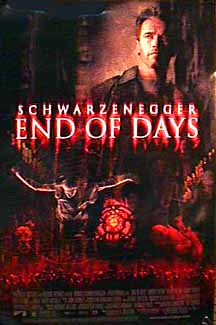

Contents | Features | Reviews | Books | Archives | Store |
 |
|
| Movie Credits | Buy It! |
End of Days
Review by
Elias Savada
Posted 23 November 1999
|  |
Directed by Peter
Hyams. Starring
Arnold
Schwarzenegger, Written by Andrew W. Marlowe. |
Ahnuld’s latest action dud is one huge Millennium bug bomb, a sad, pyrotechnic rehashing of yet another The-Devil-Takes-a-Bride concept that someone green-lighted when, by the looks of the outcome, it should have been dumped in the trash. In the grand tradition of Species II, this lame supernatural effort arrives D.O.A. at thousands of screens in time for Thanksgiving. It’s got the bird right. Turkey. Director-Cinematographer Peter Hyams (The Relic, Outland, 2010) pulls off the unthinkable: Stigmata II. Budgeted at over $100 million, this film may be strong out the gate, thanks to the star’s fans and the flashy trailer (yeah, doesn’t that wormy apple look neat!), but the grosses will actually mimic the titanic sinking of Speed 2. Rod Steiger, playing a priest trying to prevent the negation of existence (hmmm, Dogma anyone?), exclaims “There are forces here at work you couldn’t possibly comprehend.” Frankly, by the time our hero meets his match, I couldn’t give a damn.
And Lord knows what was going on when writer Andrew W. Marlowe (Air Force One) made the Man from Hell (Gabriel Byrne) such a dapper, determined, yet short-tempered, gent heaped in sarcasm, seemingly modeled after Michael Douglas’ Gordon Gekko of Wall Street, even to the point of Satan channeling into the body of a Wall Street banker. Yes, Lucifer, like Godzilla, travels to where the action is. On the eve of the new century, he’s a tourist anxious to pluck the virginity of a clueless “chosen one” (The Craft’s Robin Tunney) on Eastern Standard Time. Boozehound/security guard Jericho Cane (ah, J.C., get it!) is the reluctant protector of all mankind and savior against the forces of evil. Quite an agenda considering he utterly suicidal (the usual dead wife and child pathos). Based on the pepto-abysmal cocktail he mixes up, including pizza plucked from the floor, self-destruction looks much more appealing.
When the film gets talky, such as when The Man (as the Devil’s character is called) confronts Jericho in his apartment in a cold-hearted attempt to sway his allegiance, it’s like a very bad version of My Dinner with André. The Man (harping about God): “He is the biggest underachiever of all time. He’s just a good publicist.” Or “You take that overblown press kit they call the Bible…” He then offers the ex-cop some “quality time” with his dead family. Oy.
The mumbo-jumbo story deals with biblical prophecies and the hyped-up excuse that we dream in reverse, which is news to me. In Marlowe’s world “666” is now “999” or better still “1999.” Since life is like an upside-down rear-view mirror (some Hebrew text in the opening credits is both backwards and reversed), the demon from down under gets a chance to turn the world topsy-turvy. On the battlefront, the Vatican has dueling factions dealing with the problem, and mankind seems to be doomed more out of bureaucratic haggling than over its date with Beelzebub. After sitting through this ever-spiraling downward exercise in dumb-headedness, the Y2K problem looks like a godsend. The hokum builds up from the opening set-up, twenty years earlier, of Christine’s birth and a medical coven (Udo Kier in a bit role) that whisks the infant away from her mother before she has a chance to expel the placenta. Fast forward a couple of decades and an unearthly predator arrives just in time for the senior prom, finding Byrne’s human form in a posh eatery restroom, and getting its first flesh-bound kick by grabbing some teat on the way to the pending Apocalypse.
The film tumbles along wet streets and sunny skies with mostly cheap theatrical scares (i.e.: a cat jumping out from a closed refrigerator). As Jericho is getting a refresher Bible course early in the film, he figures that Satan is about to be “loosened” on the world. Do they mean Mephistopheles is about to get a case of the trots? Well audiences will be running, and be sure to hold your nose. The eve of the final shootout finds a battered, bruised, and fully-sutured Ramboesque hero wondering if the devil knows about G.P.S., which, in this case, could stand for “God, does this Picture Stink.”
In passing, Kevin Pollak appears briefly as Jericho’s partner Chicago before he gets a better offer. He tries to imbue his role with at least a smidgen of humor (sadly lacking throughout).
There are a couple of winners, I’m glad to say. Sam Raimi pulled out of the director’s chair to make For the Love of the Game and commercial and video director Marc Nispel, hired to helm this misconceived child, got yanked late in pre-production.
Contents | Features | Reviews
| Books | Archives | Store
Copyright © 1999 by Nitrate Productions, Inc. All
Rights Reserved.